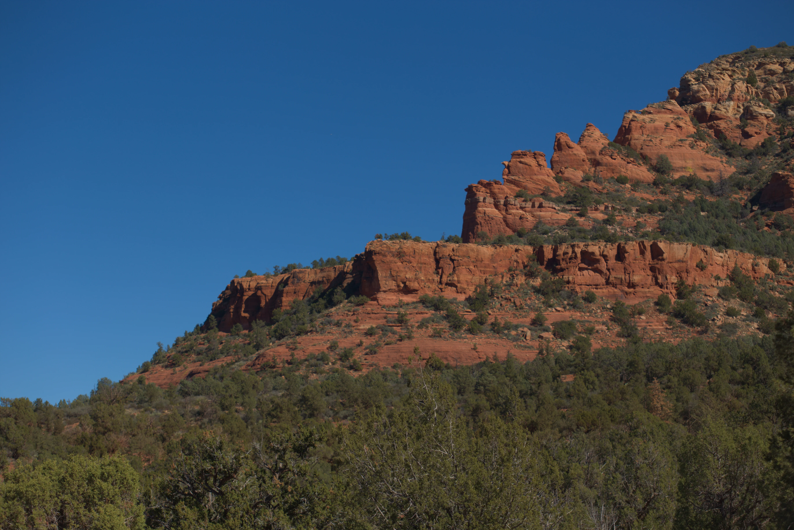
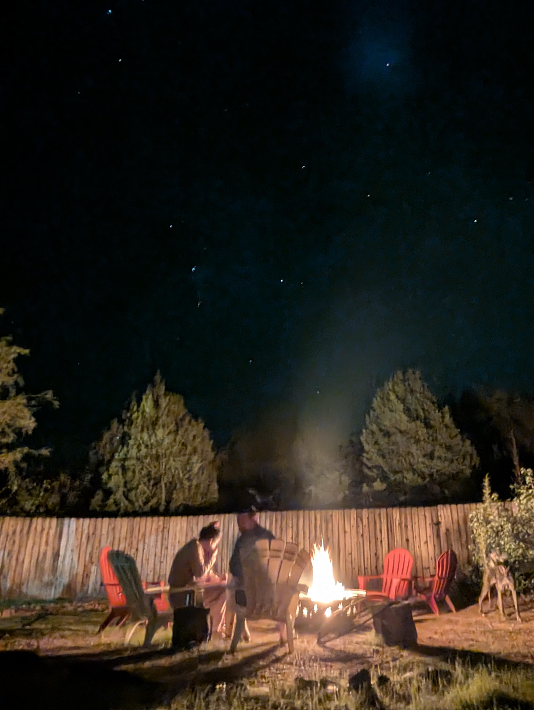
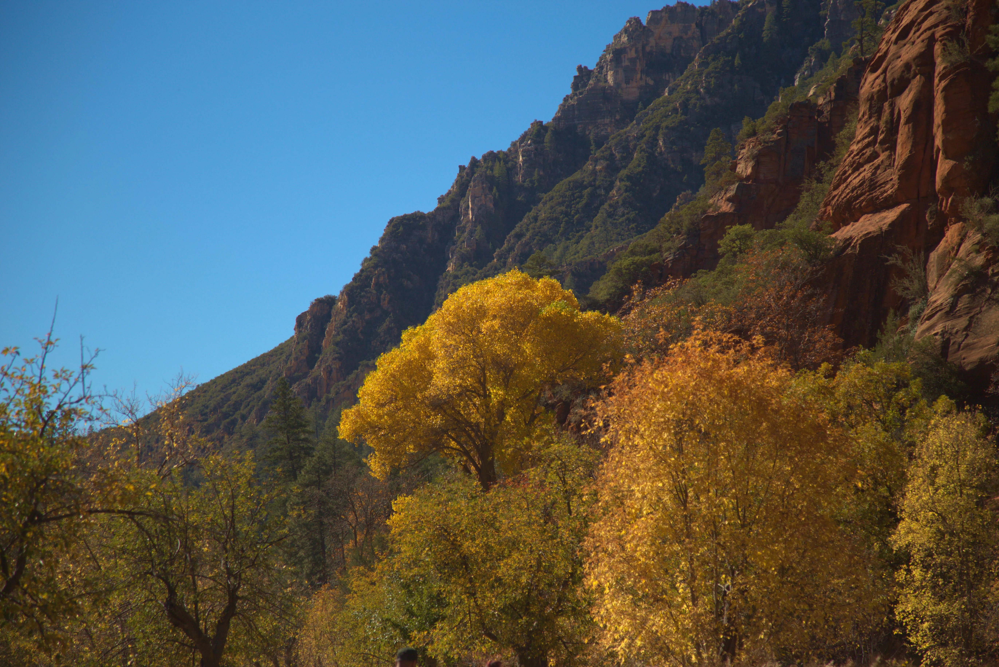
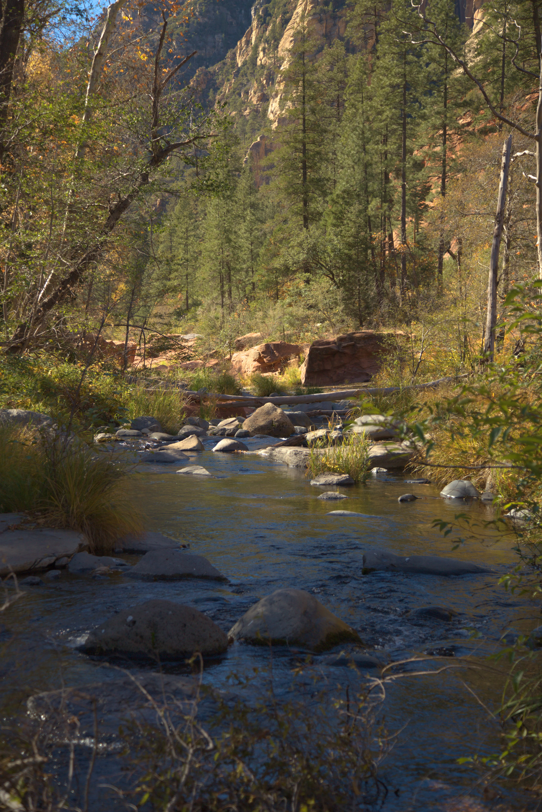

The way there
Road trips in the Southwest are largely uneventful. Besides nice views of Lake Mead, and picturesque landscapes of Arizona, it is a pretty boring ride. It never ceases to amaze me just how randon the supercharger placements are. Coming from the EU where they are at shopping centres and gas stations, charging ones car in a Carl Jr. parking lot seems absurd. The dogs were super excited, as were the humans, and in approx. 4:30, we arrived in Sedona AZ late in the evening.

I did manage to snag a pretty awesome picture of the night sky with a very well defined andromeda galaxy! I unfortunately did not bring a tripod, but the sky was only Bortle 3.
Day one - Devil's Bridge Trail
On day one we began a hike pretty early in the day, well we atleast tried. We ended up no finding a parking spot (murica' yeah) and ended up charging the car and getting muzzles for the dogs. Then we simply took a shuttle from a P+R.
The hike was quite easy, covering 6 miles in total with manageable descents. It took us about 3 hours. The views were extremely worth it. The bridge was awe-inspiring even though it was very touristy.


I just love how martian the terrain looks. I'm also looking into why my 6D's sensor has decided to mess up the contrast on some pictures.
The rest of the day was largely uneventful, mostly being spent by grilling steaks and trying smores for the first time. I also snapped a couple pictures of the fire with my Pixel, came out suprisingly good!
Day 2 - The Greek autumn à la Sedona
Day 2 started off very slow so we only managed to hit a trail for about 2 hours, covering about a mile. The west fork is such a beautiful place to be. It reminded me of the majesty of the Greek Peloponnese and a little of High Tatra alpine valleys.
The camera was behaving even wierder, but still managed to capture some beautiful shots. Warning, very cozy fall vibes. Thw only thing I missed was some for or atleast cloud coverage.
 We then went to see a very interesting church, offering incredible views.


Day 3 - Grand Canyon
Day 3 started with leaving the place behind and driving to the Grand Canyon. Seeing it for the first time in my life, It was hard to conprehend. I must say it is larger than anyone can describe.

And thus, that was it. A 3 day trip to AZ with incredible views offering a true look at the "wild west"